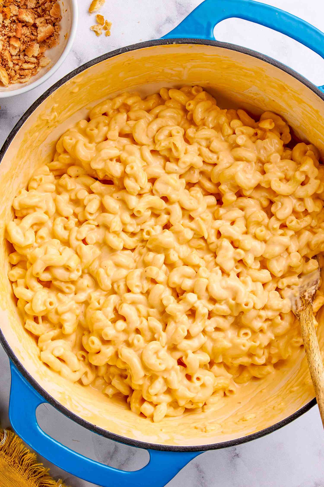

Ohm's One Pot Mac and Cheese Recipe

Description
This simple recipe only takes about 10-15 minutes to cook and will be a hit at any party!
Ingredients
- Evaporated milk - 1 can
- Any pasta noodle of choice
- Any cheese of choice
- Salt
- Gochuchang
Steps
- You want to cover the pasta with salted water so that it barely covers the top of the layer of pasta.
- Allow water to boil and cook to al dente per box instructions, water should mostly have been absorbed by the pasta at this point.
- Now you will add the can of evaporated milk and set the heat to low.
- Add in the gochuchang and cheese and slowly stir until fully incorporated.